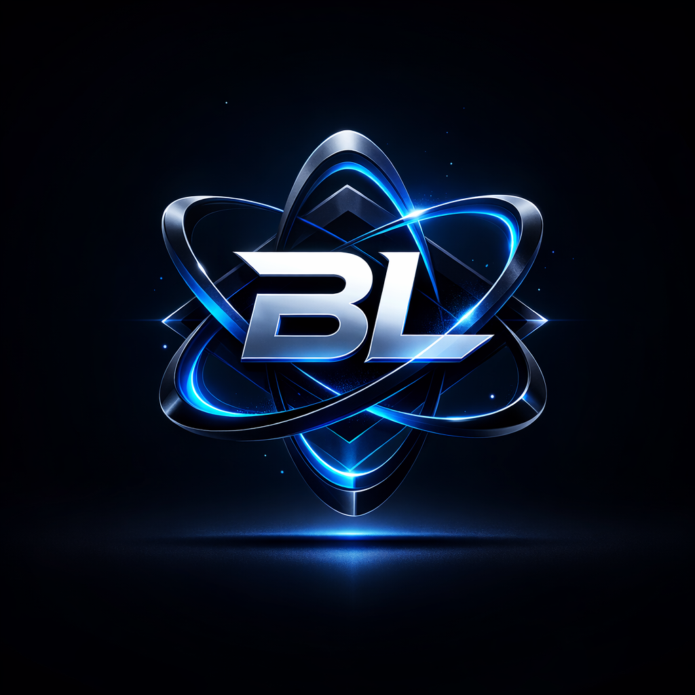
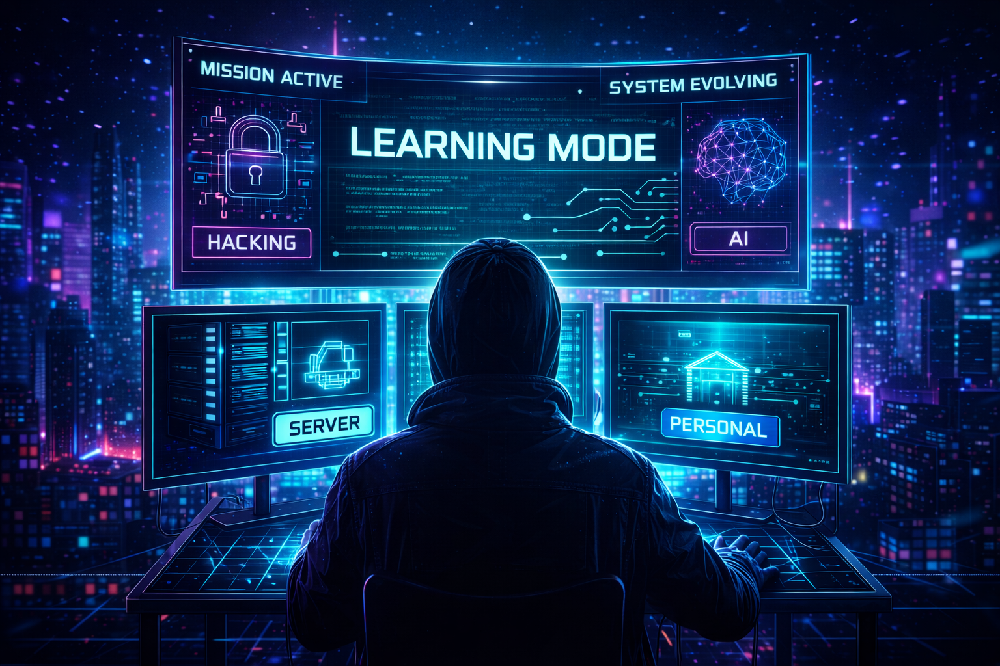

Focus: Tecnología, creatividad y desarrollo personal
Status: Learning / Building / Improving


PERSONAL_PROJECTS
Desarrollo de una plataforma orientada a ayudar a jóvenes a encontrar
dirección profesional mediante algoritmos y toma de decisiones guiada.
En 2019 gestioné un servidor de Minecraft que alcanzó más de 30 jugadores
simultáneos. Este proyecto permitió aprender programación en Java,
uso de JSON y coordinación de equipos para mejorar la experiencia
de usuario y la organización del trabajo.
Objetivo constante: crear herramientas útiles que simplifiquen la vida
sin perder el pensamiento crítico.
LONG_TERM_VISION
→ Convertirme en una persona formada, confiable y resolutiva.
→ Colaborar en proyectos internacionales relacionados con la ciberseguridad y la automatización.
→ Mantener curiosidad constante hacia el conocimiento.
→ Trabajar en remoto, investigar, crear y emprender.
→ Desarrollar proyectos que aporten valor real a la sociedad.
INTERESTS
🎮 Narrative Games — Red Dead Redemption II · Disco Elysium